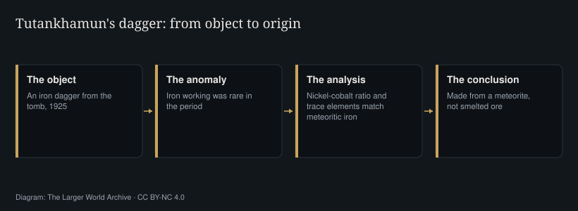

The object
Howard Carter found two daggers on the mummy in 1925. One had a gold blade; the other, with a gold handle and a rock-crystal pommel, had an iron blade. In the fourteenth century BC, smelted iron was not yet in use in Egypt, so the blade was either a rare import or meteoritic.
Maps, diagrams and images

The blade's nickel content — high for terrestrial iron of the period — was noted early. The confirmation came in 2016, when a team used portable X-ray fluorescence to measure the blade without removing it from the museum, and found a composition matching an octahedrite meteorite.
Why it matters
It is a small object that fixes a large point: iron before the Iron Age came from the sky, and ancient metalworkers knew it, worked it, and valued it. The word for iron in Egyptian texts has been argued to mean 'metal of heaven', and the dagger is the physical case.
Documented: the blade is meteoritic iron, by composition (Ni, Co, and trace elements).
Documented: it was made by low-temperature working, not smelting — consistent with meteoritic metal.
Documented: the object was buried with the king around 1323 BC.
Not claimed: that the dagger is magic, alien, or evidence of lost technology. It is evidence of good craft and a rare material.
Why it is in the archive: because it is the counter-example to the out-of-place-artefact genre — a genuinely surprising object whose surprise has a measurement behind it.
Why it is here
The archive collects claims that look impossible and turn out to be ordinary, and claims that look ordinary and turn out to be remarkable. This is the second kind, and it is filed as documented because the spectrometer said so.
Open resources on this topic
- PapersOpen-access articles: DOAJ · PubMed Central · Internet Archive Scholar
- BooksPublic-domain and borrowable copies: Open Library · Project Gutenberg · Google Books · Internet Archive
Cite this page
Momin, S. (2026). Tutankhamun's Meteorite Dagger. The Larger World Archive. https://drsamonline.github.io/LARGE_GLOBE/tutankhamun-dagger.htmlMomin, Sohil. “Tutankhamun's Meteorite Dagger.” The Larger World Archive, 2026, https://drsamonline.github.io/LARGE_GLOBE/tutankhamun-dagger.html.Momin, Sohil. “Tutankhamun's Meteorite Dagger.” The Larger World Archive, 2026. https://drsamonline.github.io/LARGE_GLOBE/tutankhamun-dagger.html.@misc{tutankhamuns2026tutankhamun,
author = {Momin, Sohil},
title = {Tutankhamun's Meteorite Dagger},
year = {2026},
howpublished = {The Larger World Archive},
url = {https://drsamonline.github.io/LARGE_GLOBE/tutankhamun-dagger.html},
note = {Last reviewed 20 November 2026}
}Last reviewed 20 November 2026 · Corrections policy · this page is not peer reviewed
Sources for this page
- Wikipedia, “Tutankhamun's meteoric iron dagger” — the object and the analysisen.wikipedia.org
- Wikipedia, “Meteoric iron” — the material and how it is identifieden.wikipedia.org
- Wikipedia, “Tutankhamun” — the burial and its contentsen.wikipedia.org
- Wikipedia, “X-ray fluorescence” — the method used without touching the bladeen.wikipedia.org